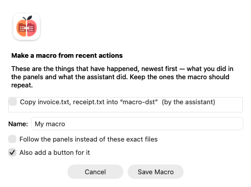

Makrók
A makró fájlműveletek elnevezett sorozata — mappát létrehozni, a kijelölést belé mozgatni, a maradékot címkézni —, amelyet egy kattintással újra lefuttathat. Nem szkriptnyelv: nincsenek benne feltételek és ciklusok, és ez szándékos. A makró egy lista, amelyet el lehet olvasni, és olvasni tudni kell, mielőtt jóváhagyja.
Mindaz, amit egy makró tesz, ugyanazon a gépezeten megy át, mint az asszisztens. A makró tehát semmi olyat nem tehet, amit nem engedélyezett, minden lépése megjelenik a műveletnaplóban, és ami visszavonható volt, az továbbra is az.
A legrövidebb út: abból, amit épp most tett
A makrót nem kell nulláról megírni.
- Csinálja meg a dolgot egyszer — másoljon, mozgasson, nevezzen át vagy töröljön a paneleken, vagy csináltassa meg az asszisztenssel.
- Válassza a Beállítás ▸ Makró a legutóbbi műveletekből… menüpontot.
- Jelölje be azokat a lépéseket, amelyeket a makrónak meg kell ismételnie, adjon neki nevet, és hagyja bekapcsolva a Gomb hozzáadása is hozzá jelölőt.
- Jelölje be a Kövesse a paneleket ezek helyett a konkrét fájlok helyett lehetőséget, ha a makrónak legközelebb azzal kell dolgoznia, ami akkor lesz kijelölve. A sorok a bejelöléskor megváltoznak, így látja, mit ment el.
Makró mentése — és a gomb ott van a sávban. Ez az egész folyamat.

Ami már megtörtént, egy új makró lépéseiként felkínálva.A lista mindkettőt tartalmazza: amit Ön csinált a paneleken (F5, F6, F7, F8 és egy átnevezés), és amit az asszisztens vagy egy másik makró csinált. Minden sor megmondja, melyikről van szó — mert egy vegyes munkamenet után ugyanaz a két fájl mindkettőben felbukkanhat.
Amit nem kínál fel. Archívum csomagolása, és minden más, amit az alkalmazás csak név szerint őriz meg, nem alakítható lépéssé — nincs hozzá forma. Az ilyen sorok szürkítve, az okukkal együtt látszanak, ahelyett hogy hiányoznának, hogy egy ötös lista, amely hármat kínál, ne tűnjön úgy, mintha kettőt elnézett volna. Az útvonalak pedig — hacsak nem kér mást — azok, amelyek valóban lefutottak: egy felvett makró azt a másolást ismétli meg, nem „egy olyasfajta másolást”. Nyissa meg a szerkesztőben, és tegyen
%S-t vagy%T-t oda, ahol a paneleket kell követnie.
Kövesse a paneleket: így kér mást. Az egyetlen mappából származó fájlokból a kijelölés lesz; abból a mappából, amelyik a két panel egyike, az a panel lesz, a benne lévő mappa pedig megtartja a végét — a felvett „vidd ezt a négy számlát a Dokumentumok/2026-08 mappába” abból „vidd a kijelöltet a túloldali 2026-08 mappába” lesz, és holnap két másik mappában is működik. Ami egyik panel alatt sincs, marad az az útvonal, ami — nincs mibe behajtani. A lehetőség csak akkor jelenik meg, ha változtatna valamin.
A mellékelt példák
Amikor először megnyitja a Beállítások ▸ Makrók szerkesztése… menüpontot, a fájl nyolc kidolgozott példával jön létre. Ezek hétköznapi makrók — módosítsa őket, vagy törölje azokat, amelyekre nincs szüksége —, és mindegyik visel egy megjegyzést arról, mit csinál és mit érdemes benne átírni:
| Makró | Mit csinál |
|---|---|
| Open today's folder | Létrehozza a mai dátummappát az aktív panelen, és belép oda. Holnap újra használható. |
| File the selection into a dated folder | Kijelöli az összes PDF-et, a túloldalon év-hónap mappát hoz létre, és odamozgatja őket. |
| Copy the selection to a dated backup folder | Azt másolja, amit Ön jelölt ki, a túloldal egy dátumozott mappájába. |
| Move the pictures into an Images subfolder | Egy maszk, egy almappa, abban a mappában, ahol amúgy is áll. |
| Merge the CSV files into one and open it | Megmutatja, hogyan használja egy lépés azt, amit egy korábbi lépés előállított. |
| File the selection into a folder you name | Futáskor megkérdezi Öntől a mappát. |
| Mark the file under the cursor as reviewed | Címkét ad neki, és dátummal látja el a megjegyzését — egy fájl, nem a kijelölés. |
| Put the temporary files in the Trash | Törlő makró, és épp az, amin egyszer érdemes megnézni a jogosultsági kérdést. |
Mindegyikből parancs lesz, így bármelyiket gombra vagy billentyűre teheti anélkül, hogy bármit írna.
Kezelésük
A Beállítások ▸ Makrók kezelése… maga a lista: hogyan hívják az egyes makrókat, hogyan hívják a parancsukat, hány lépésből állnak, és mit fog kérni a jogosultsági ellenőrzés — így a „ez itt töröl” látszik, mielőtt billentyűre tenné. Innen átnevezhet, kettőzhet, átrendezhet és törölhet. A sor fölé érve látszanak a lépései.
 Melyik makrót hogy hívják, miként fut, és mire fog engedélyt kérni.
Melyik makrót hogy hívják, miként fut, és mire fog engedélyt kérni.
A sorrend nem dísz: a fájl sorrendje az, amelyben a Parancsböngésző és a gombsor választója felsorolja őket.
Törléskor felajánljuk, hogy a gombok is menjenek vele, és ezt akkor is érdemes tudni, ha soha nem nyitja meg ezt az ablakot: a kézzel eltávolított makró hátrahagyja a gombját és a billentyűjét, és egyik sem csinál többé semmit — az alkalmazás mostantól megmondja, hogy a makró nincs meg, ahelyett hogy hallgatna, de a gomb továbbra is az Ön dolga. A billentyűt vagy a menüpontot ott kell kivenni, ahol beállították.
A lépéseket nem itt szerkeszti. A Fájl szerkesztése… ehhez átadja a szót a szerkesztőnek, ugyanabból az okból, amiért nincs űrlap: egy lépés egy eszköznév az argumentumaival, és pontosan ez az, ami a JSON.
Makrók szerkesztése kézzel
A Beállítások ▸ Makrók szerkesztése… megnyitja a macros.json fájlt a konfigurációs mappájában, első alkalommal a fenti példákkal létrehozva. A makró lépések listája, és minden lépés megnevez egy eszközt és annak argumentumait:
[
{
"id": "stage-by-month",
"title": "File the selection into a dated folder",
"icon": "calendar",
"steps": [
{ "tool": "set_selection", "arguments": { "mask": "*.pdf" } },
{ "tool": "make_directory", "arguments": { "path": "%T/%{date:yyyy-MM}" } },
{ "tool": "move", "arguments": { "sources": "%S", "destination": "%T/%{date:yyyy-MM}" } }
]
}
]
A mentés azonnal újratölti a makrókat — és szól, ha valami nem stimmel: elgépelt eszköznév, hiányzó kötelező argumentum, két azonos azonosítójú makró. A hibás makró nem fut le, és nem kerül gombra sem; megtudja, melyikről van szó és mi a baj vele, amíg a szerkesztő még nyitva van.
Hogy milyen eszközök vannak és mit fogadnak el, a Beállítások ▸ Parancsböngésző… mutatja meg, vagy kérdezze meg az asszisztenst a list_macros felől.
Helyettesítők
Az egyes betűk ugyanazok, amelyeket a gombsáv és a Start menü használ: aki már készített gombot, annak itt nincs mit újat tanulnia.
| Helyettesítő | Jelentése |
|---|---|
%P |
Az aktív panel mappája |
%T |
A másik panel mappája |
%N |
A kurzor alatti fájl |
%S |
A kijelölt fájlok — lista, és pontosan ezt fogadja el a copy, a move és a move_to_trash |
%{date:yyyy-MM} |
A makró indulásának dátuma, ebben a formában |
%{1.destination} |
Egy megnevezett érték az 1. lépés eredményéből — itt a fájl, amelyet a merge_files írt |
%{1} |
Az 1. lépés teljes eredménye, ha az a lépés közvetlenül egy útvonalat vagy útvonallistát adott |
%{ask:Folder name} |
Megkérdezi Önt, amikor a makró fut. A %{ask:Folder name=Archive} Archive értékkel tölti fel a mezőt |
A kapcsos zárójelek a kiegészítéseknek szólnak, mert a betűk már foglaltak: a %M a program egészében „a másik panel kurzora alatti nevet” jelenti, így a hónapot nem lehetett így írni.
A lépések eredményéhez a megnevezett alakot használja. A legtöbb eszköz több értéket jelent egy helyett — a merge_files megmondja, hová írt, hány fájlt fűzött össze és hány sor lett belőle —, ezért a %{2.destination} a szokásos írásmód, a puszta %{2} pedig csak olyan eszköznél működik, amely egyetlen útvonalat ad vissza. A nem létező, vagy nem útvonal típusú név megállítja a makrót, ahelyett hogy találgatna.
A fájlnévben lévő % az egy %. Semmi, amit egy lépés előállít, és semmilyen panelről vett név nem olvasódik újra helyettesítőként — az 50%Netto.pdf nevű fájl tehát változatlanul megy át a makrókon. Szó szerinti %-hoz abban a sablonban, amelyet Ön ír, kettőzze meg: %%.
Érték bekérése
A %{ask:…} az a mód, ahogyan egy makró átvesz valamit, amit előre nem tudhat — a leggyakoribb makró az, hogy „vidd a kijelölést egy mappába, amit én nevezek meg”, és e nélkül a mappát fixen bele kellene írni a fájlba.
A kérdést azelőtt kapja meg, hogy a terv megjelenne, és a válaszok már benne vannak: a sorok azt mondják, „Vidd a kijelölést a »Számlák« mappába”, nem azt, hogy „abba, amit mindjárt begépel”. A kérdés megszakítása megszakítja a makrót; semmit sem javasoltunk, nemhogy végrehajtottunk volna.
Ugyanaz a kérdés kétszer leírva egyszer hangzik el, és mindkét helyen ugyanaz szolgál, így két lépés, amely ugyanazt a mappát nevezi meg, nem térhet el. Az első = után álló szöveg az, amivel a mező indul. A megfogalmazás az Öné: pontosan úgy jelenik meg, ahogy leírta, azon a nyelven, amelyen leírta.
A válasz érték, sosem sablon: ha 50%Netto-t gépel, 50%Netto nevű mappát kap.
Kérdést feltevő makrót külső ügynök MCP-n keresztül nem futtathat — ott nincs kit megkérdezni, és az alapértékeket szó nélkül elfogadni annyi lenne, mint Ön helyett válaszolni. Elutasításra kerül, és ezt meg is mondja.
A %S az egyetlen pont, ahol a makró eltér a gombtól: gombon a kijelölés szavak listája lesz egy parancssorhoz, itt pedig a teljes útvonalak listája, amelyet a fájleszközök elfogadnak.
Az a lépés, amelynek %S vagy %{1} értéke üresen jön ki, megállítja a makrót, ahelyett hogy semmivel futna. A fájl nélküli move nem kisebb move — olyan kérés, amely már nem mond semmit, és sikert jelenteni rá hazugság lenne.
Makró futtatása
Minden makró mc_<id> nevű paranccsá válik, és ezáltal magától megjelenik itt:
- Beállítás ▸ Parancsböngésző…
- Beállítás ▸ Gyorsbillentyűk szerkesztése… — tegye egy billentyűre
- A gombsáv szerkesztőjének parancsválasztójában
- A
.mnumenüfájljában és ausercmd.inifájlban, ha használja őket - Az asszisztensben, amely név alapján futtatni tudja
Mielőtt egy változtató makró lefut, listaként megmutatja a lépéseit és vár. Kihúzhatja azt a lépést, amelyet nem szeretne; ami marad, az fut le. A csak olvasó makró kérdés nélkül fut. Egy lépés kihúzása magával viszi a tőle függő lépéseket — a makró egy sorozat, és a mappát megtöltő lépés nem futhat le a mappát létrehozó lépés nélkül: azok a sorok maguktól kikapcsolnak és elszürkülnek. Tegye vissza a lépést, és visszatérnek — kivéve azokat, amelyeket Ön húzott ki; azok kihúzva maradnak.
 A lépések, a paneljeihez feloldva — mindegyik kihúzható.
A lépések, a paneljeihez feloldva — mindegyik kihúzható.
Minden, ami indulás előtt is felismerhetően hibás — nem létező eszköz, hiányzó argumentum, olyan lépés, amely másik makrót futtatna —, az első lépés előtt állítja meg a makrót, nem a harmadik után. Ha egy lépés futás közben hiúsul meg, a makró ott áll meg, ahelyett hogy folytatná: a második lépés rendszerint feltételezi, hogy az első megtörtént, és fájlokat egy létre nem jött mappába mozgatni nem részsiker. A jelentés megnevezi a lépést, elmondja, mi ment félre, és hány lépés futott már le; mindegyik szerepel a műveletnaplóban, a visszaútjával együtt, ahol van ilyen.
Mit tehet egy makró
A makrót a benne lévő legigényesebb dolog szerint mérik. Az a makró, amelynek lépései csak olvasnak, olvasásnak számít; az, amely végleges törléssel végződik, végleges törlésként van védve — még azelőtt, hogy bármi elindulna, nem négy lépéssel később.
Az a lépés, amely parancsot futtat, aszerint minősül, hogy az a parancs mit tesz, nem aszerint, hogy parancs — a cm_DeleteReal-t futtató makró tehát törlő makró, és Ön így is látja. Makró nem futtathat másik makrót, egyik írásmóddal sem.
Alapértelmezés szerint semmi többet nem ad meg. Ha a makró olyan lépést tartalmaz, amelyet az engedélyei nem tesznek lehetővé — shell-parancsot, szkriptet —, az egész makró elutasításra kerül az indoklással, és nem történik semmi.
Visszavonás
Minden lépés önállóan naplózódik, ezért a makró utáni visszavonás annak utolsó lépését veszi vissza, nem az egész makrót. Makró egészére vonatkozó visszavonás nincs, mert több eszköznek egyáltalán nincs inverze, és egy gomb, amely ezt felajánlaná, róluk hazudna.
Hol tárolódik mindez
- A makrói a konfigurációs mappa
macros.jsonfájljában vannak — egyszerű fájl, amelyet diffelhet és a dotfiles közt tarthat. - A makró által hozzáadott gombok a
default.barszokásos gombsáv-bejegyzései, így egyet eltávolítani ugyanaz, mint bármely más gombnál.
Következő lépések
- Automatizálás (AppleScript és Parancsok) — A Peach Commander vezérlése szkriptből, és saját szkriptek futtatása makrólépésként.
- A gombsáv — Ahová a makró által hozzáadott gomb kerül.
- Billentyűzet és gyorsbillentyűk — Makró billentyűhöz rendelése.